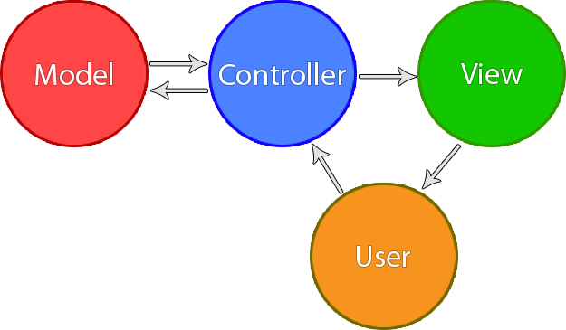
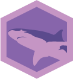

Kraken JS
An Express MVC layer by Paypal
Presented by Shane King
What is MVC?
Model
- Responsible for data (retrieving, validating, saving, etc.)
- Generally only talks to the controller
Controller
- Gets data from model and sends to user
- Takes input from user and sends to model
View
- Takes data from controller and renders for the user
The Kraken Suite

Lusca
App Security

Kappa
NPM Proxy
Makara
Dust I18N

Adaro
Dust Context
Adaro
Dust Context
Lusca - App Security
Provides security for your application out of the box, such as:
Kappa - NPM Proxy
- Allows for private NPM repos
Makara - Dust I18N
- I18N = Internationalization
- Allows for multiple languages with ease using Dust
Adaro - Dust Context
- Implements support for dust templating
Making a website in three steps
-
Install the generator
npm install -g generator-kraken -
Create a project
yo kraken -
Start your server
npm start -
Create more pages (optional)
yo kraken:page pageName
Demo time
Release the Kraken!
The end
You can view this presentation on http://lotsofprojects.com
Background image and suite icons from KrakenJS.com